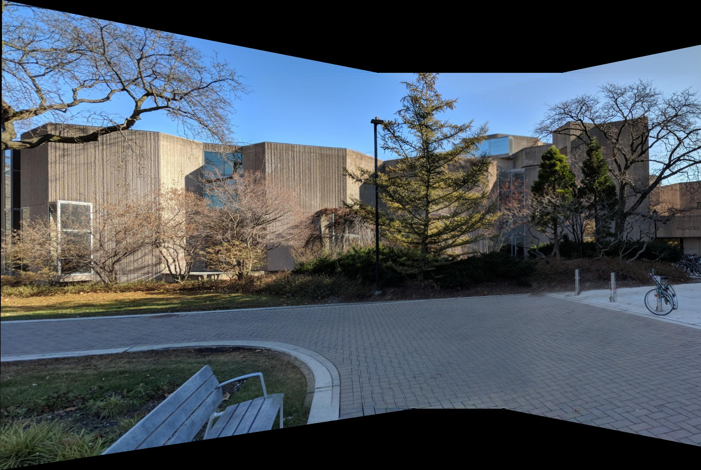
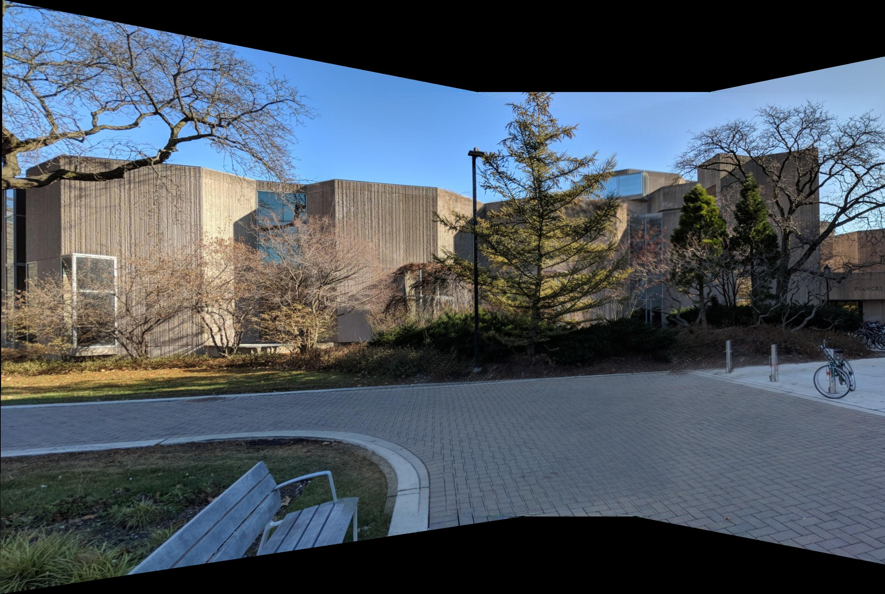
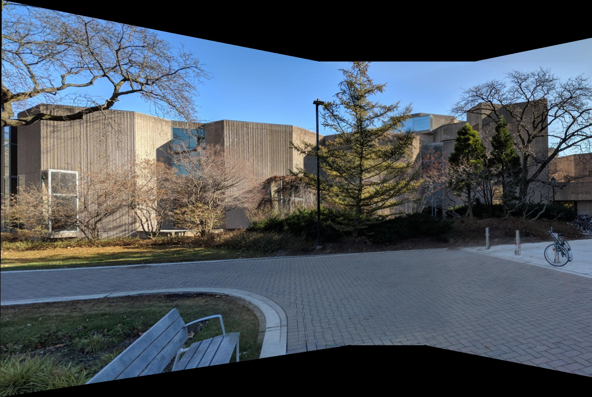

Unsupervised Learning | Biomedical Science Using Nonnegative Matrix Factorization to Identify Muscle Synergies During a Multi-Joint Task
Healer Baxter
Deep Learning | CV | Motion Planning Baxter Robot play the piano based on detected human emotion
Terminator
ROS | CV | Motion Planning Baxter Robot pick up a nerf gun, locate a cup, pull the nerf gun trigger to shoot the cup when given a user input, and move to a final pose
Mobile Manipulation
Manipulation | Motion Planning KUKA youBot to pick up a block at the start location and carry it to the desired location in the simulation software V-REP
Visual Pushing and Grasping
Deep Reinforcement Learning | Docker Train robotic agents to learn to plan pushing and grasping actions for manipulation with deep reinforcement learning
ImageMosaic
Computer Vision Create an image panorama by stitching a set
of images together
Pin-triangle Dynamics Simulation
Dynamics | Simulation Simulation of a triangle bouncing in the enclosed rectangle
This project aims to use nonnegative matrix factorization algorithm to identify muscle synergies during a multi-joint task
Motivation
When doing multi-joint task involving lifting up the shoulder and bending the elbow, what really happened is that there are some movement-related signals coming from our brain,
in specific coming from our cerebral cortex, and reaching the motor neuron at the spinal cord and traveling all way down through the axons and synapsing
with the corresponding muscle fibers and finally creating the torque out. Instead of having to control dozens of muscles individually, the signals coming from our brain just control the activation
of a much smaller number of muscle groups. This muscle synergies is part of a hierarchical control strategy. Thes synergies identify the relevant muscle groups that when activated together, allow for simplified control of particular biomechanical features of the limb.
Experiment Setup
System Pipeline
The system acquires torque data through the torque sensor as well as the EMG signal through 8 surface EMG electrodes. The torque data indicates the extent to which the participant is flexing about the testing elbow joint.
The EMG signal indicates the electical activity within each of the 8 testing muscles. We used a DAQ card for data acquisition. A Matlab program streams the sensory data and convert the voltage signal
to the actual torque generated by the participant. A python program processes the collected data and use matrix factorization algorithm to find the synergies behind the EMG data
Participants and Conditions
Participants
One male and three female participants with no hemiparetic stroke were tested. They were all right-hand dominant, and with a mean ± standard deviation age of 26 ± 3 (range: 22-29)
Conditions
The participant was asked to pull in using 2 different shoulder abduction loads (10% and 50% of the maximum shoulder abduction torque)
Experiment Procedure
The participant was requested to not exercise the day before and of testing to avoid muscle fatigue. At the beginning of the testing session, the participant sat with their torso and waist strapped to the Biodex chair.
The participant's testing arm was affixed to an isometric measurement device at 85° shoulder abduction, 40° shoulder flexion, and 90° elbow flexion.
8 electrode were placed on the surface of the person’s skin in order to record the muscle activities.
Demo
Data Analysis
Muscle Synergy
In order to condense the information and use less amount of muscle groups to explain all of the emgs, the idea of motor synergy was taken to find the muscle synergies. The goal here is to find the coordinated recruitment of groups of muscles with specific activation balances
Hypothesis
The anticipated result is that there should be one synergy reinforces the elbow flexing and one reinforces the shoulder abduction.
Since bicep is the main muscle for elbow flexing and the anterior deltoid is the main muscle for shoulder abduction, the hypothesis is made that the bicep is the
main muscle for one synergy group and the anterior deltoid is the main muscle for another synergy group
Methods
The unsupervised learning method —— Nonnegative matrix factorization algorithm (NMF) is taken to find the muscle synergies that explains the 8 muscle activations. The squared residual and VAF measurements are taken to estimate the
minimum number of muscle synergies, and cross-validation approach is used to help deriving a more accurate estimation.
EMG Preprocessing
EMGs were processed to remove baseline voltage drift, rectified,
and then averaged over the 0.5-s target matching interval. Mean baseline EMGs (recorded while subjects
sat with their arm affixed to an isometric device without force generation) were subtracted from the averaged data. As a result, EMG data for each trial were vectors whose dimension was 8 (the number of
muscles recorded) and these data reflected the increase in muscle activity corresponding to active force
production. Before synergy extraction, EMG data recorded from each muscle were concatenated across
trials relevant to the purpose of the synergy extraction and normalized by dividing each of the EMG channel by its maximum to have unit variance. This
normalization procedure ensured that subsequent synergy extraction from preprocessed EMGs was not
biased towards high-variance muscles.
Identification of Muscle Synergies —— NMF Algorithm
Estimate the number of muscle synergies (k)
Algorithm
Results
MSE Box Plot
The training error and testing error were plotted out based on the collected data. The box plot shows a clear trend in training error, where the mean square error of the training set decreases
as the number of muscle synergy increases. But there isn't the same trend in the testing set, since the mean and standard deviation of the testing error for each number of muscle synergy doesn't have much difference among each other. Thus, the mean square error is not sufficient
to estimate the minimum number of muscle synergies. Thus the VAF measurement is used to help estimate the number of muscle synergies
MSE and VAF measurement results
According to the requirement that adding another synergy increased the mean global VAF < 3%, the number of muscle synergy for the 10% shoulder abduction load task was chosen to be 4 and that for the 50% shoulder abduction load task was chosen to be 2
Normalized Muscle synergy when shoulder abduction load is 10% (# synergies = 4)
This project aims to use deep learning and manipulation platform to train a two-armed robot to play the piano based on the human emotion.
Motivation
We live in an era in which communication seems simpler than any times, a friend is only one text away or one video chat away. Although communication may be easier and faster, people still feel lonely and depression rates have largely increased. Inspired by this circumstance, this project is to design a system that would enable the Baxter Robot to detect the negative emotion of its master and play songs on the piano using both hands to help him/her get rid of the bad feelings.
Emotion Detection
1. Data Pre-processing
The datasets are composed of 35887
training and testing samples. The training
samples are then divided into two sets namely;
Training Set and Validation Set. Training set
samples composed of 80% of the original dataset
samples and 20% of the samples are specified for
validation. Hence Training Set and Validation Set
will be 22966 and 5741 respectively.
Preprocessing is performed to prepare images for
the feature extraction stage. A set of facial feature
points is extracted from the images then facial
features derived from these points. Different sets
of facial features are used for both training and
validation classifiers.
2. Data Augmentationg
In order to avoid overfitting and improve
recognition accuracy I applied data
augmentation techniques on each training samples. For each image I performed
following transforms:
a. Rescale (1. / 255)
B. Rotation (30)
b. Shear (0.3)
c. Zoom (0.3)
d. shift(width:0.4,height:0.4)
e. Flip (horizontal)
3. Proposed CNN Model
The CNN Model I built takes the input grayscale image size of 48*48 pixels. This model architecture is composed of 5 layers. These layers
contains 5 convolutional layers and 5 max pooling layers along with 2 fully connected layer and the output layer. The
output layer consists of 5 neurons corresponding to 5
emotional labels: Angry, Happy, Neutral, Sad and Surprise. This model uses Rectified Linear Unit (relu) as most precisely used
activation function which is applied on all the Convolution
Layer and Dense Layer except the last layer (output layer)
which is actually Softmax Function. Dropout Layer is also
applied after each Convolution, Max Pooling and Dense
Layer with the rate of 0.25
Emotion Detection Demo
Piano Playing
The detected emotion would be written in a text file using basic pyhton I/O function. The piano playing node keep reading this text file and when the emotion "sad" is detected and written in the file, baxter would start playing the piano
Locate keys using AprilTags
Use pose infomation of the two apriltags in left_arm frame to compute the poses of keys in the baxter base frame
The goal of this project is to enable Baxter Robot pick up a nerf gun, locate a cup, pull the nerf gun trigger to shoot the cup when given a user input, and move to a final pose.
Action Sequence
1. Baxter goes through initial calibration and start up sequence. Arms are moved to an initial pose.
2. Baxter finds the nerf gun using an AprilTag and its left arm camera
3. Baxter moves its left arm to line up with the nerf gun and closes its gripper to pick up the gun
4. Once Baxter has the gun, it uses its left arm camera to find a cup using darknet
5. Baxter keeps moving its left arm until the cup is in the center of the image produced by the camera
6. Baxter moves its right arm to put its grippers around the nerf gun trigger
7. Baxter waits for a user input to confirm the firing of the gun
8. Baxter keeps waiting until the user tells it to fire
9. Baxter pulls the trigger using its right gripper
10. Baxter moves to a final pose right after shooting
The goal of this project is to drive the KUKA youBot to pick up a block at the start location, carry it to the desired location, and put it down in the simulation software V-REP. The project covers the following topics: 1. Plan a trajectory for the end-effector of the youBot mobile manipulator. 2. Generate the kinematics model of the youBot, consisting of the mobile base with 4 mecanum wheels and the robot arm with 5 joints 3. Apply feedback control to drive the robot to implement the desired task 4. Conduct the simulations in V-REP
Most grasping algorithms today often fail to handle scenarios where objects are tightly packed together. They can attempt bad grasps repeatedly to no avail since they can only find accessible grasps. This project proposed to discover and learn synergies between pushing and grasping from experience through model-free deep reinforcement learning.
System Overview
Model Input & Output
The Q-function is modeled as two feed-forward fully convolutional networks(FCNs) Φp and Φg. FCN Φp is for pushing motion primitive behavior and FCN Φg is for grasping.
For each individual FCN Φψ:
Input: the heightmap image representation of the current state
Output: a dense pixel-wisemap of Q values with the same image size and resolution as that of the state
Note: each individual Q value prediction at a pixel p represents the future expected reward of executing primitive ψ at 3D location q where q→p ∈st.
The goal of this project is to Create an image panorama by stitching a set of images together
Image Registration
I used SURF to do the feature point extraction and matching, then used random sample consensus(RANSAC) for transform matrix estimation
Image Warping
Use the derived transform matrix nad project that warped image on a plain surface
Image Blending
Using Center-Weighting algorithm (compute the the distance from each pixel to 4 boundaries of the image and take the the smallest ratio
between two distances and the dimension of image as the corresponding pixel
value on mask matrix). The mask we derived is shown in the following image:
For each image, I derive a mask and then warp the mask just as warp the image
Cropping
After doing image stitching and image blending, I get the panorama look as following

Use pythong to find the largest rectangle that don’t include the black region in the
panorama image, I get the final panorama look as following
This project is a dynamics simulation of a triangle bouncing in the enclosed rectangle. This project shows techniques expansion from theory and ability of building physical model.
dynamic model
The pictured pin-triangle is a constrained system involving 2 bodies: a equilateral triangle and a square. the triangle has length d = 3, mass m =0.5 and rotational inertia J=1 (assuming that the center of mass is at the center of geometry). The square has length D = 20, mass M = 5 and rotational inertia J=3 (assuming that the center of mass is at the center of geometry). The triangle has configuration (x,y,\theta_t) and the square has an angle \theta_s relative to the world frame. The triangle is constrainted to not bounce out of the square.


 
